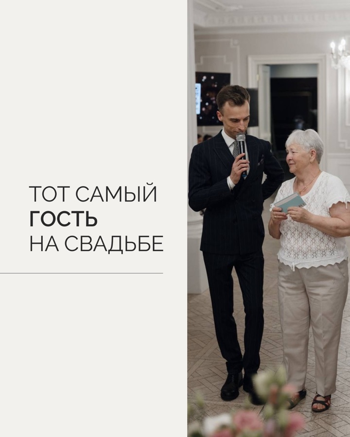

Ведущий мероприятий · контент на месяц · июль 2026
Как собрать профиль ведущего, которому доверяют свой день
Для Сергея Глибина выстроили 20 публикаций: сняли образ «тамады с конкурсами», показали спокойный профессиональный подход и подвели аудиторию к проверке свободной даты.
Финальные материалы подготовлены и переданы в публикацию. Охваты, заявки и бронирования в кейсе не заявляем: таких подтверждённых данных нет.


Маркетинговая задача
На рынке мероприятий покупают не микрофон и сценарий
Пара выбирает человека, которому можно отдать атмосферу важного дня. Контент должен был одновременно показать характер ведущего, профессиональный контроль и бережное отношение к гостям.
Что думает клиент
«А нас точно услышат?»
Будет ли всё по шаблону?
Не заставят ли гостей участвовать?
Кто удержит тайминг?
Что, если всё пойдёт не по плану?
Что входит в программу?
Что должен сделать профиль
Дать спокойствие ещё до первой встречи
Мы разложили подход Сергея на понятные доказательства: индивидуальный сценарий, деликатная работа с гостями, связка ведущего, DJ и живой музыки, готовность управлять неожиданностями.
Логика месяца
От предубеждения — к доверию и диалогу
Публикации не собраны случайной лентой. Каждая группа решает свой вопрос аудитории и готовит следующий шаг.
Не «тамада»
Разобрать устаревший образ ведущего с навязчивыми конкурсами.
Как устроена работа
Показать сценарий, тайминг, подготовку и роли команды на площадке.
Что будет в сложный момент
Ответить на страхи про гостей, паузы и изменения программы.
Живые события
Перевести обещания в реальные фотографии, сцены и форматы свадеб.
Проверить дату
После полезной части дать простой следующий шаг без давления.
Полезных
Чек-листы, выбор, тайминг и стоимость.
Наши работы
Разные площадки и масштабы события.
Вовлекающих
Вопросы, на которые хочется ответить.
Предложения
Дата, программа и живой звук.
Разбора мифов
Современный ведущий без шаблонов.
О ведущем
Опыт через реальные рабочие ситуации.
Продукт целиком
Можно посмотреть не выборку, а весь готовый месяц
20 тем, 20 обложек, все 33 слайда каруселей и связная серия из пяти сторис. Нажмите на любой макет, чтобы открыть его полностью.
Маркетинговая архитектура
20 тем с понятной ролью
В плане видно, как польза, доказательства, отстройка, диалог и предложения чередуются, а не конкурируют друг с другом.
Единая визуальная система
Все 20 обложек формата 4:5
В ленте сочетаются реальные фотографии, типографика и спокойная премиальная палитра. У каруселей показана первая страница.
5 каруселей · 33 слайда
Сложные вопросы раскрыты по шагам
Листайте стрелками или выбирайте миниатюры. Каждый слайд можно увеличить.
Мини-прогрев из пяти кадров
От страха потерять дату — к публикации
Серия не повторяет основной пост: она создаёт вопрос, усиливает актуальность и ведёт к материалу о бронировании.
Контроль качества
Что можно проверить в финале
Показываем только подтверждённый состав и статус проекта. Результаты рекламы или продаж не достраиваем.
уникальных файла
15 статичных макетов, 33 слайда каруселей и 5 сторис. Точных дублей нет.
готовые форматы
Публикации собраны в 1200×1500, сторис — в 1080×1920.
факты отделены от идей
Если для истории не хватало подтверждённой фактуры, её выносили в вопрос, а не выдавали за реальный случай.
Как шёл проект
От брифа до передачи в публикацию
Контент-план, тексты, визуал и согласование шли одной цепочкой. Изменения фиксировались до финальной передачи.
Старт
Зафиксировали задачу, аудиторию, тон и состав.
Контент-план
Передали логику месяца, тексты и видеоразбор.
Финальный визуал
Собрали папку со всеми макетами; дизайн согласован.
Правки текста
Обработали первый круг и отделили вопросы по фактам.
Публикация
Комплект передали в публикацию, после чего задачу закрыли в истории.
Границы доказательств
Сильный кейс не требует придуманных цифр
Здесь достаточно самого продукта: маркетинговой логики, текстов, финальных макетов, согласования визуала и передачи в публикацию.
Что подтверждено
- 20 тем в контент-плане;
- 5 каруселей на 33 слайда;
- 5 сторис-прогрева;
- 53 финальных изображения;
- план для Instagram, ВКонтакте и Telegram;
- согласование визуала и передача материалов в публикацию.
Чего мы не заявляем
Нет подтверждённых данных об охватах, заявках, продажах или количестве забронированных дат. Также не выдаём внутренний статус «на публикации» за доказательство размещения каждого поста.
Фотографии гостей показаны в рамках разрешения из брифа. Контактные данные, внутренние ссылки и рабочая переписка на страницу не вынесены.
Ваш профиль тоже должен продавать доверие?
Соберём месяц контента, который объясняет ценность вашей работы
Маркетолог выстраивает план и тексты, дизайнер собирает визуал, менеджер ведёт согласование и публикацию. 10 постов — от 4 990 ₽.